Промышленная автоматизация
Системы управления технологическим оборудованием, локальная автоматика, диспетчеризация, телеметрия и интеграция шкафного оборудования.
Подробнее об услугеАвтоматизация котельных, очистных сооружений, тепличных комплексов и промышленных предприятий. Монтаж КИПиА, пусконаладка и запуск инженерных систем под ключ.
Специализация — сложные многокомпонентные системы, требующие понимания нескольких инженерных разделов одновременно.
ПромАвтоматика Юг ориентирована на B2B-заказчиков, которым нужен не просто монтажный подрядчик, а технически сильный субподрядчик с пониманием нескольких инженерных разделов одновременно. Такой формат особенно востребован у генеральных подрядчиков, системных интеграторов, производителей промышленного оборудования, предприятий с вводом новых линий, аграрных комплексов, телеком-операторов, газовых компаний и муниципальных эксплуатирующих организаций.
Каждое направление можно привлекать отдельно, но наибольшую ценность компания дает там, где нужно увязать несколько подсистем в один инженерный результат.
Системы управления технологическим оборудованием, локальная автоматика, диспетчеризация, телеметрия и интеграция шкафного оборудования.
Подробнее об услугеУстановка датчиков, измерительных цепей, исполнительных устройств, шкафов автоматики и приборных линий.
Перейти к разделуКабельные трассы, щиты, силовые и контрольные кабели, подключения технологических механизмов и инженерных систем.
Смотреть услугуПроверка сигналов, настройка логики, отработка аварийных сценариев, комплексное опробование и запуск объекта.
Изучить этап ПНРКомпания участвует в проектах, где автоматизация не может существовать отдельно от электромонтажа, КИПиА и инженерной увязки. Это типичная ситуация для котельных, очистных сооружений, тепличных комплексов, дата-центров, газораспределительных объектов и производственных линий.
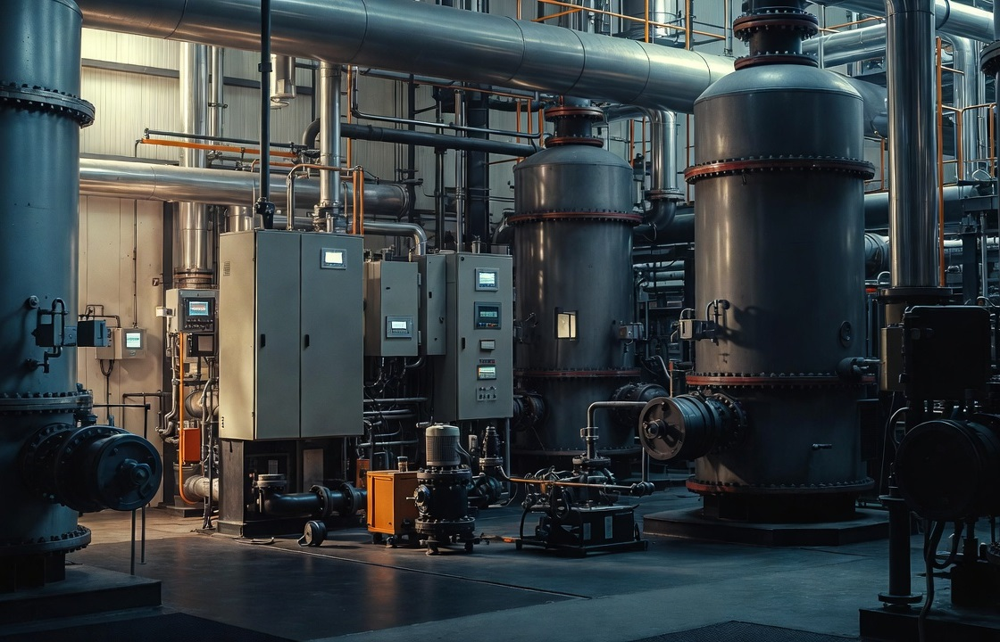
Автоматизация, диспетчеризация, насосные группы, защитные сценарии и пуск тепломеханики.
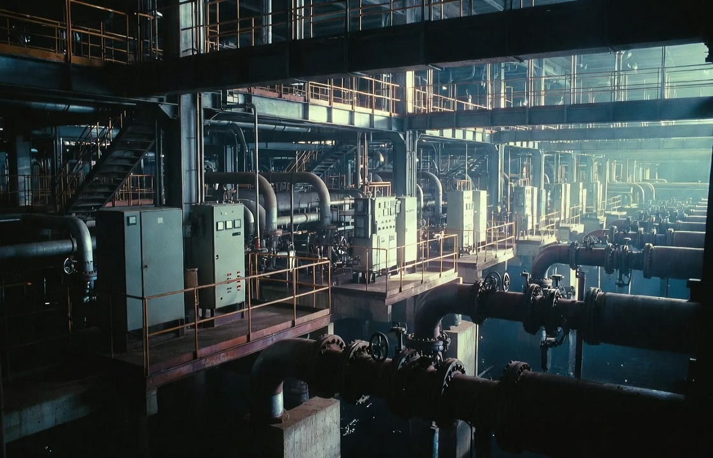
Уровни, насосные группы, телеметрия, аварийные алгоритмы и работа распределенных узлов.
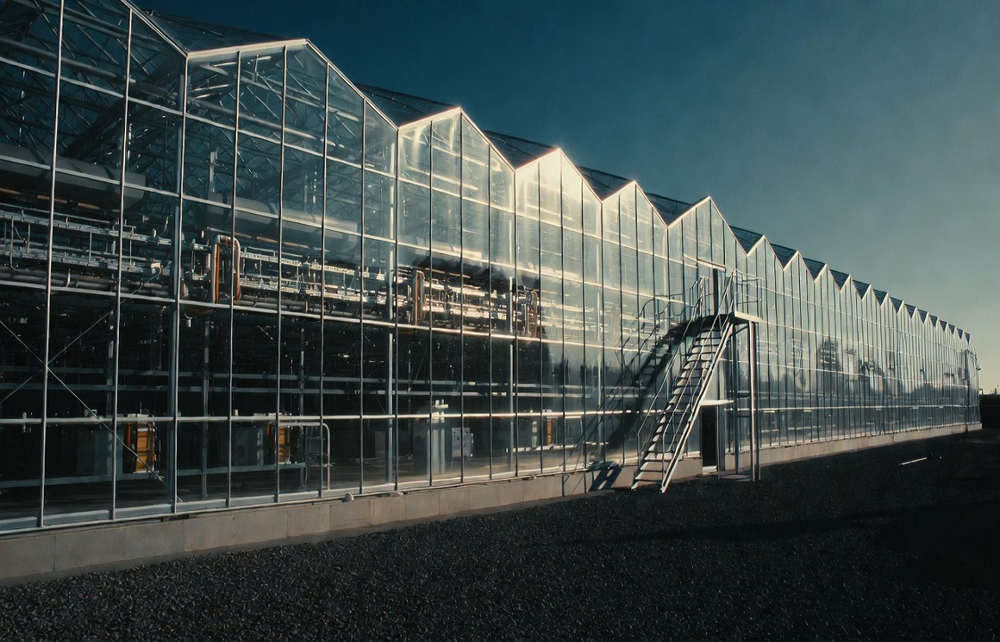
Микроклимат, полив, отопление, вентиляция и энергетическая координация.
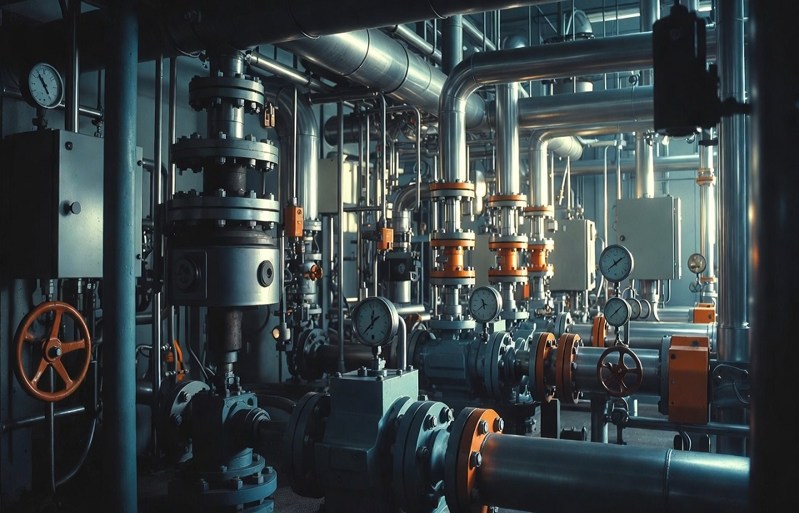
Управление насосами, частотное регулирование, защита и удаленный контроль.
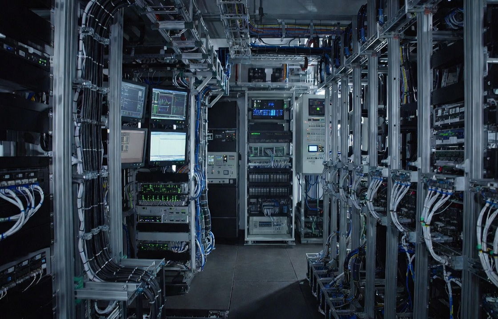
Питание, мониторинг, телеметрия, BMS и инженерные системы высокой надежности.
Работаем с генподрядчиками, промышленными предприятиями и интеграторами, которым нужен технически сильный исполнитель для сложных инженерных задач.
Работаем сразу с несколькими разделами: монтаж КИПиА, электроснабжение, системы безопасности и промышленная автоматизация.
Доводим системы до рабочего состояния и ввода в эксплуатацию, а не только выполняем монтаж.
Выявляем ошибки в проектной документации и предлагаем технические решения.
Автоматизация котельных, очистных сооружений, тепличных комплексов, ЦОД, промышленных предприятий.
Можем выехать, оценить объект, сформировать состав работ и предложить решение без участия заказчика.
Последовательность работ от анализа документации до ввода объекта в эксплуатацию. Каждый этап выполняется с учетом реальных условий объекта и требований заказчика.
Изучаем проект, выявляем ошибки и определяем объем работ.
Формируем оптимальную конфигурацию оборудования и систем.
Выполняем электромонтаж, монтаж КИПиА и сопутствующих систем.
Настраиваем системы, проверяем работу оборудования и взаимодействие всех элементов.
Обеспечиваем стабильную работу систем и ввод в эксплуатацию.
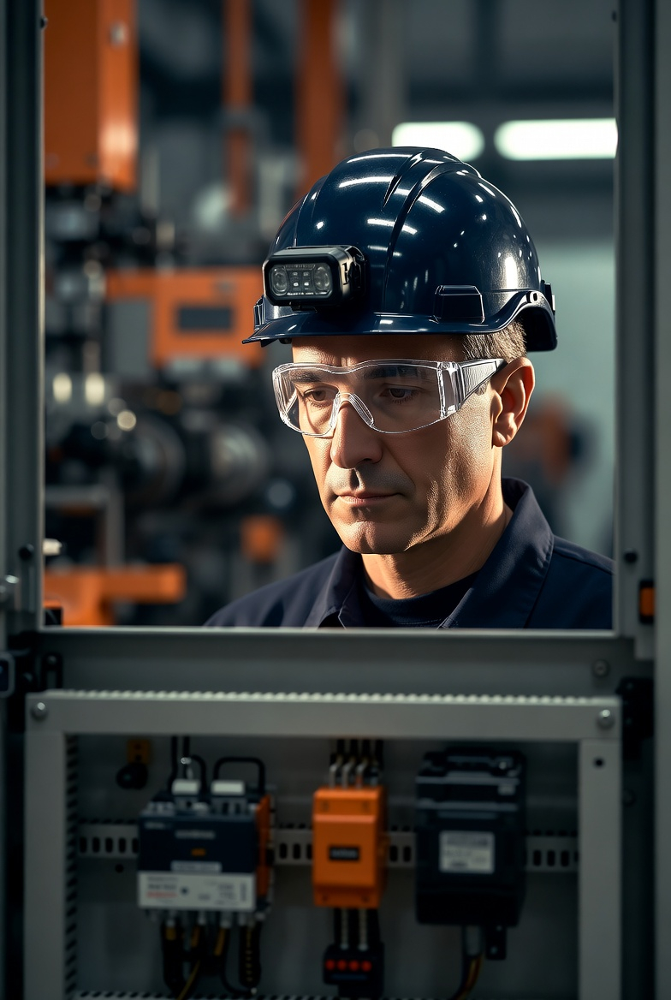
Более 20 лет опыта в промышленной автоматизации и КИПиА. Профильное образование: слесарь КИПиА и высшее образование — инженер-программист.
Практический опыт включает:
Работаю непосредственно на объектах и отвечаю за результат.
Подробнее о компанииРазвернутое описание реализованных кейсов доступно на странице проектов. Подробные сценарии по профильным объектам вынесены в раздел типовых объектов.
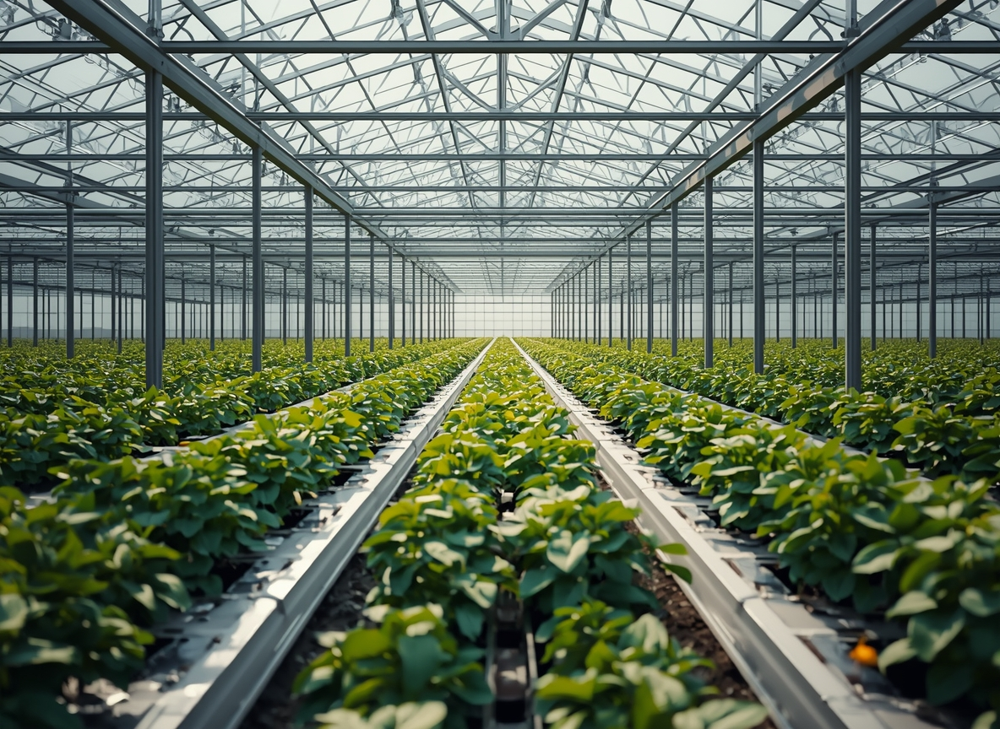
Задача: автоматизация микроклимата, электроснабжение, кабельная инфраструктура и диспетчеризация.
Выполнено: монтаж КИПиА на 23 блоках, сборка щитового оборудования, прокладка 8 км кабеля, пусконаладка системы управления климатом.
Результат: комплекс введен в эксплуатацию в срок, автоматика работает стабильно, система контролирует освещение, отопление, полив и вентиляцию.
Смотреть проекты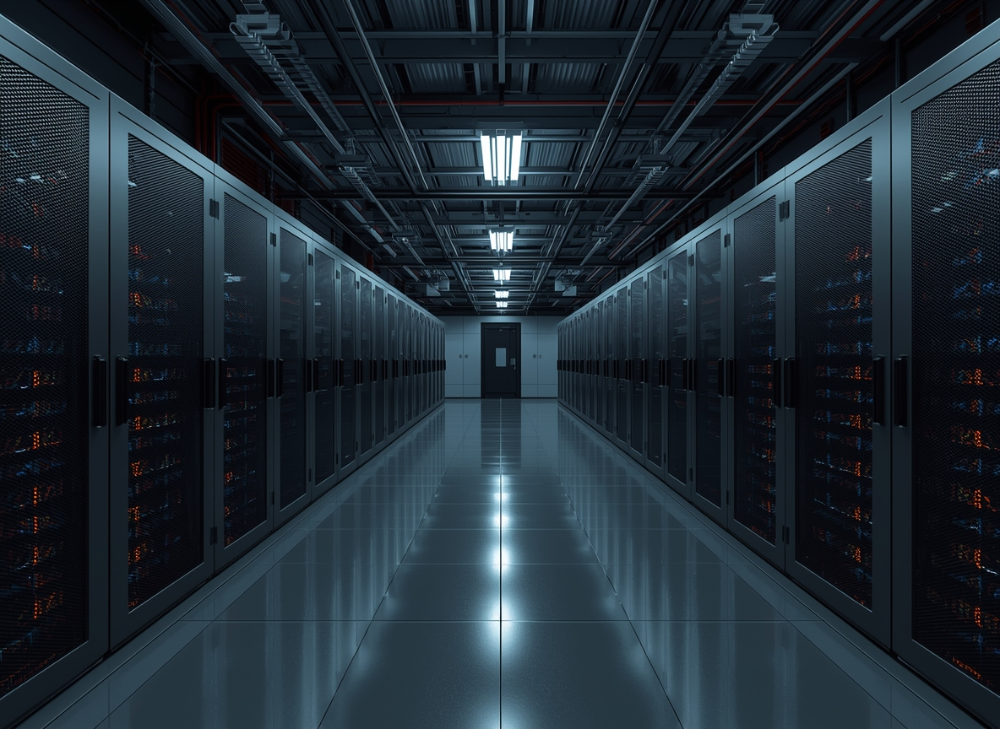
Задача: интеграция инженерных систем, электропитания, мониторинга и телеметрии в единую SCADA-систему.
Выполнено: монтаж датчиков температуры и влажности, подключение ИБП, интеграция систем пожарной сигнализации и контроля доступа.
Результат: все инженерные системы связаны, диспетчер видит состояние оборудования в реальном времени, аварийные сценарии отрабатываются автоматически.
Открыть портфолио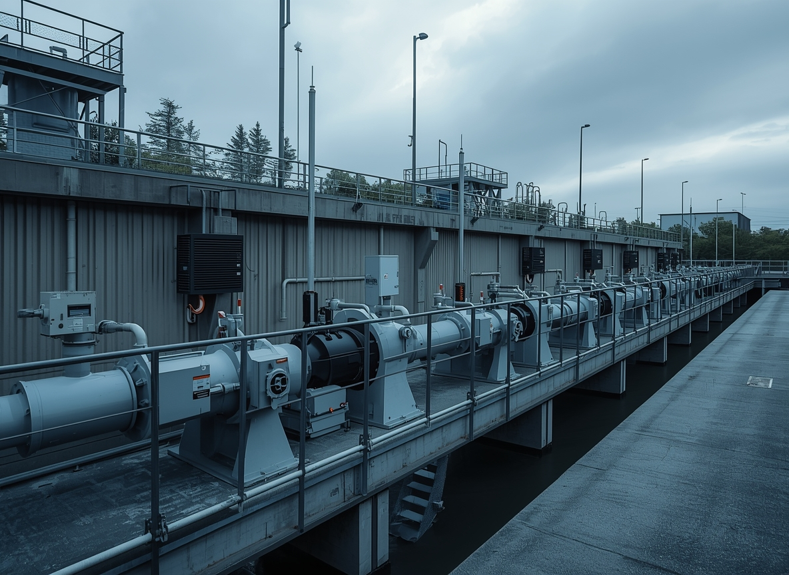
Задача: автоматизация насосных групп, контроль уровня, удаленный мониторинг и управление технологическим процессом.
Выполнено: монтаж датчиков уровня и расхода, настройка ПЛК, подключение частотных преобразователей, внедрение SCADA.
Результат: очистные работают в автоматическом режиме, диспетчеризация через GSM, расход электроэнергии снижен на 18% за счет оптимизации работы насосов.
Смотреть кейсы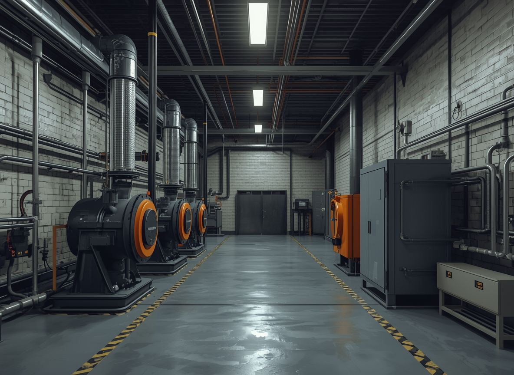
Задача: автоматизация котельного оборудования, настройка датчиков КИПиА, диспетчеризация и пусконаладка систем управления.
Выполнено: монтаж шкафов управления, подключение датчиков температуры и давления, настройка ПЛК, интеграция исполнительных механизмов, внедрение удаленного контроля.
Результат: котельная запущена в автоматическом режиме, все параметры контролируются в реальном времени, диспетчеризация через веб-интерфейс, сокращено время реакции на аварийные ситуации.
Перейти в разделРаздел собран как инженерная база знаний для генподрядчиков, интеграторов, промышленных предприятий, агрохолдингов, операторов связи, муниципальных предприятий и производителей оборудования.

Семь практических критериев выбора подрядчика для генподрядчика: опыт запуска, работа с комплексными системами, пусконаладка и реальные проекты.
Читать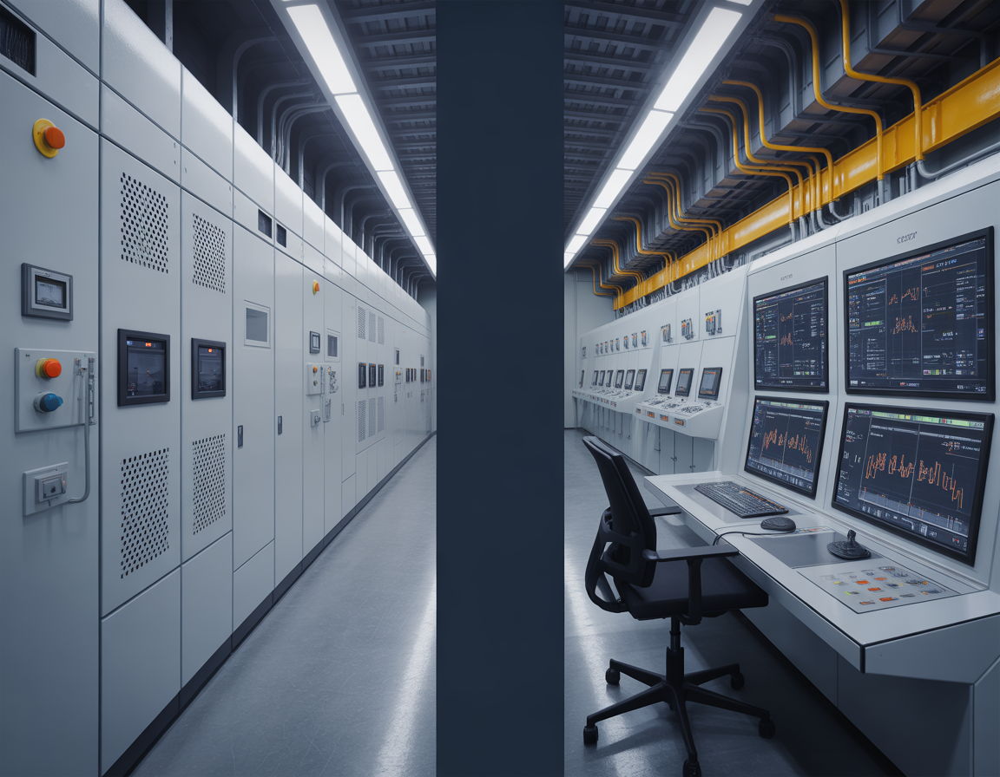
Инженерное различие между автоматизацией и диспетчеризацией: уровни управления, оборудование и задачи эксплуатации.
Читать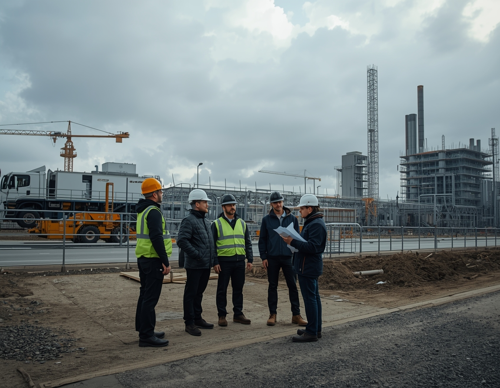
Какие этапы проходит внедрение промышленной автоматизации: обследование, проект, монтаж, КИПиА, наладка и запуск.
ЧитатьОсновная зона работы компании сосредоточена в Южном федеральном округе, однако короткие и технически точечные проекты могут выполняться по всей России.
Промышленные площадки, логистика, АПК, теплоэнергетика, коммунальная инфраструктура, телеметрия и распределенные инженерные объекты.
Производственные комплексы, аграрные объекты, складская и холодильная инфраструктура, коммерческая инженерия и автоматика котельных.
Пищевое производство, газовая отрасль, агропром, насосные станции и объекты с высокой долей полевого оборудования.
Промышленность, энергетика, водоканал, производственные линии и инженерные узлы с развитой системой учета и контроля.
Газовая инфраструктура, портовые и логистические площадки, распределенные коммуникации, автоматика насосных и очистных объектов.
Отправьте проектную документацию, спецификацию или краткое техническое описание. Мы оценим состав работ, инженерные риски и удобный формат взаимодействия по объекту.
Перейти в контакты · Посмотреть порядок работы · Изучить технические статьи